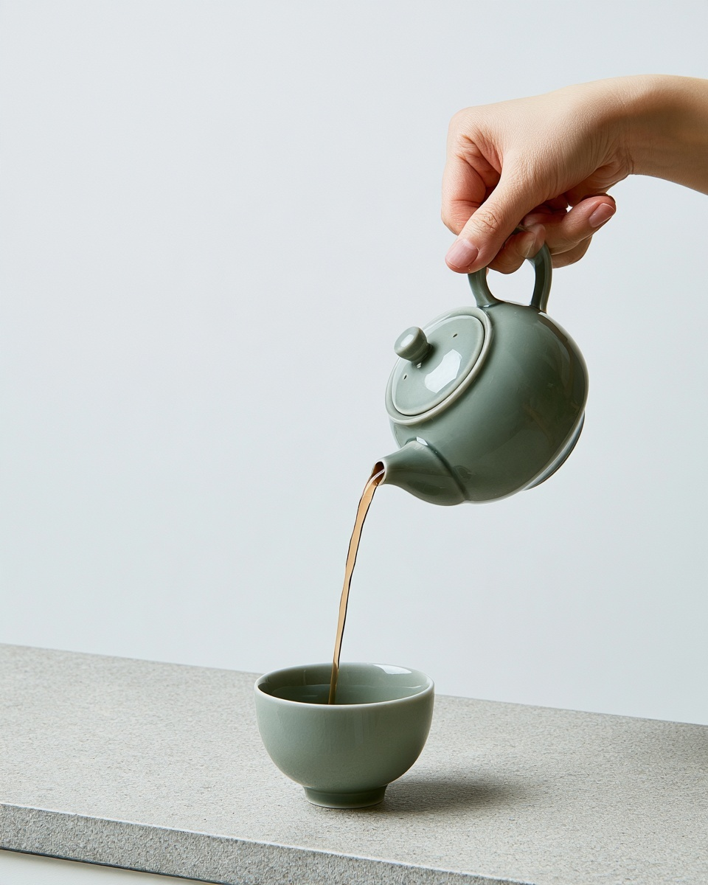

우리기 전에 살펴보세요.
차는 물을 만나기 전부터 작은 이야기를 건넵니다. 잎의 모양과 봉지 속 향, 그릇에 떨어지는 소리. 모든 것의 이름을 몰라도 자세히 느끼는 일은 여기서 시작할 수 있습니다.
호기심을 따라가요.
싱그러운 향이나 깊게 볶은 맛, 익숙함의 편안함에 끌릴 수도 있습니다. 취향은 정답이 아니라 대화의 시작입니다. 새로운 차를 만날 때마다 달라져도 괜찮아요.
찻잔을 채우는 것들을 들여다봅니다.

차는 물을 만나기 전부터 작은 이야기를 건넵니다. 잎의 모양과 봉지 속 향, 그릇에 떨어지는 소리. 모든 것의 이름을 몰라도 자세히 느끼는 일은 여기서 시작할 수 있습니다.
싱그러운 향이나 깊게 볶은 맛, 익숙함의 편안함에 끌릴 수도 있습니다. 취향은 정답이 아니라 대화의 시작입니다. 새로운 차를 만날 때마다 달라져도 괜찮아요.

잎의 양과 물, 기다리는 시간에 따라 한 잔은 달라집니다. 고른 차의 안내에서 시작해 좋아하는 쪽으로 조금씩 조절해 보세요. 다시 즐기기 쉬울 만큼 단순하게요.
준비는 시작일 뿐입니다. 책 옆이나 식사를 마친 자리, 오랜만에 만난 두 사람 사이에 찻잔을 놓아 보세요. 차는 그 시간을 함께하기 위해 있습니다.